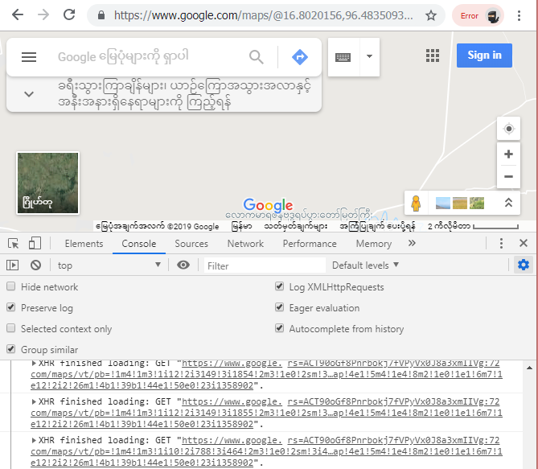

What You'll Learn
Introduction
AJAX ဆိုတာကတော့ Asynchronous JavaScript နဲ့ XML တို့ရဲ့အရှည်ပဲဖြစ်ပါတယ်။အဲ့တာရဲ့ concepts တွေကတော့ရိုးရှင်းပါတယ်။ A JAX တွေက webpage အသစ်တစ်ခုကို loading မပြုလုပ်ပဲနဲ့ကျွန်တော်တို့က HTML တွေကို update ပြုလုပ်နိုင်ပါတယ်။ကျွန်တော်တို့က Google maps , Gmail,
Facebook , Twitter တွေစတဲ့ကျွန်တော်တို့နေ့စဉ်အသုံးပြုတဲ့ အရာတွေမှာ A JAX တွေကိုအသုံးပြုပြီးလုပ်ဆောင်ထားတာကိုတွေ့နိုင်ပါတယ်။ဥပမာကျွန်တော်တို့က Google Mapကိုဝင်ကြည့်တဲ့အခါမှာ
search box ကနေကျွန်တော်တို့ရှာချင်တဲ့နေရာကိုရိုက်ထည့်ပြီးရှာနိုင်ပါတယ်။အဲ့တာတွေအတွက် webpage အသစ်တစ်ခုကိုရောက်သွားမှာမဟုတ်ပဲရှိပြီးသား page ပေါ်မှာပဲဖော်ပြမှာဖြစ်ပါတယ်။နောက်ပြီးကျွန်တော်တို့က map ကို zoom in , zoom out ကိုလျှင်လျှင်မြန်မြန်ကြည့်နိုင်ပါတယ်။
အဲ့တာတွေကဘာ့ကြောင့်လဲဆိုတော့ AJAX ကပြုလုပ်ပေးထားလို့ပဲဖြစ်ပါတယ်။နောက်ထပ်ဥပမာတစ်ခုကိုပြောရမယ်ဆိုရင်တော့ Twitter မှာလည်းပဲ A JAX ကိုအသုံးပြုထားတဲ့ advantage တွေရှိပါတယ်။ကျွန်တော်တို့က twitter မှာ scroll down ပြုလုပ်တဲ့အခါမှာအောက်ဆုံးကိုရောက်သွားရင်ဆုံးမသွားပဲ
older tweets တွေပေါ်လာမှာပဲဖြစ်ပါတယ်။အဲ့တာက A JAX ကိုအသုံးပြုထားပြီး page အသစ်ထဲမှာ content အသစ်တွေကို Loading ပြုလုပ်စရာမလိုပဲအလုပ်လုပ်နိုင်မှာဖြစ်ပါတယ်။AJAX တွေကကျွန်တော်တို့ရဲ့ webpages တေါကိုအသုံးပြုတဲ့သူတွေနဲ့ ပိုပြီး frendly
ဖြစ်အောင်ပြုလုပ်ပေးပြီးအသုံးပြုတဲ့အခါမှာလည်းအခြားအရာတွေထက်ပိုပြီးမြန်ဆန်စေပါတယ်။ကျွန်တော်တို့က information အသစ်တွေကိုအချိန်တိုင်းရယူနိုင်ပြီၤးတော့ web page အသစ်တစ်ခုကိုသွားပြီးအလုပ်လုပ်နိုင်ဖို့အတွက် AJAX တွေက web server တွေဆီကနေ information
တွေကိုမေးပြီး webpages တွေကိုတည်ဆောက်ပေးပါလိမ့်မယ်။အဲ့ဒီအခါမှာ web server တွေက web browser တွေ javaScript တွေဆီကို data တွေ return ပြန်ပေးပါတယ်။အဲ့ဒီ data တွေက webpage ရဲ့ ရွေးချယ်ထားတဲ့အပိုင်းတွေကိုပြောင်းလဲပေးဖို့အတွက်ပဲဖြစ်ပါတယ်။
Information တွေအတွက် server တွေကိုမေးမြန်းရတဲ့ ဖြစ်စဉ်ကို technically အရ server ကို request ပြုလုပ်တယ်လို့ခေါ်ပါတယ်။နောက်ပြီး server ကနေအဖြေတွေကို ပြန်ပေးတာကိုတော့ response လို့ခေါ်ပါတယ်။web တွေက browsers တွေပေါ်မှာတည်ဆောက်ထားပြီးတော့
client လို့လည်းခေါ်ပါတယ်။ကျွန်တော်တို့က AJAX တွေအလုပ်လုပ်တာကိုမြင်နိုင်ဖို့အတွက် map ဖွင့်ထားတဲ့ tagမှာ console ဖွင့်ပေးပြီး setting ထဲက logXMLHttp request ဆိုတာကို select ပြုလုပ်ပေးပြီး browser ကို refresh ပြန်လုပ်ပေးရမှာဖြစ်ပါတယ်။ကျွန်တေ်ာတို့
map ကိုရွှေ့ကြည့်တဲ့အခါမှာတော့ AJAX တွေကပြောင်းလဲပြီၤအလုပ်လုပ်နေတာကိုတွေ့ရမှာပဲဖြစ်ပါတယ်။အဲ့တာတွေ့ကြောင့် AJAX ကအရေးကြီးတဲ့ web technology တစ်ခုဖြစ်ပြီးတော့ web designers တွေ developers တွေကသိထားဖို့ရန်လိုအပ်တာပဲဖြစ်ပါတယ်။

How AJAX Works
Microsoft က AJAX ကို internet explorer 5 နဲ့ 1995 မှာစတင်မိတ်ဆက်ခဲ့တာပဲဖြစ်ပါတယ်။ပထမပိုင်းမှာတော့ AJAX ဆိုတဲ့ offical name မရှိသေးပါဘူးအဲ့တာကြောင့် technically အရအဲ့တာကို XMLHttpRequest Object လို့ပဲခေါ်ပါတယ်။တစ်ခါတစ်ရံမှာတော့ short term အနေနဲ့ XHR လို့ခေါ်ပါတယ်။
ရိုးရှင်းစွာအသုံးပြုတဲ့ပုံစံကတော့ AJAX ဆိုတာက JavaScript တွေကိုအသုံးပြုပြီး web server တွေဆီကို request ပေးပို့ဖို့အတွက်နဲ့ပြန်လာတဲ့ response တွေကိုလက်ခံဖို့အတွက်နောက်ပြီးပြန်လာတဲ့ response တွေနဲ့တစ်ခုခုကိုလုပ်ဆောင်ဖို့အတွက်process
တွေပဲဖြစ်ပါတယ်။AJAX နဲ့ webserver တွေကိုဘယ်လို request တွေကိုပို့နိုင်သလဲဆိုရင် webpage တွေ text file တွေအတွက် ရိုးရှင်းတဲ့ request တွေ database ထဲမှာရှာဖွေဖို့ရန်အတွက်သို့မဟုတ် information တွေရဲ့ပြည့်စုံတဲ့ full form တွေကို request
ပြုလုပ်တာပဲဖြစ်ပါတယ်။ဥပမာ user ကwebpage တစ်ခုမှာ sign up ပြုလုပ်လိုက်တဲ့အခါမှာပြုလုပ်လိုက်တဲ့အခါမှာ user ထည့်လိုက်တဲ့ information ကို database ထဲကိုပို့ပေးတာပဲဖြစ်ပါတယ်။အဲ့ဒီနောက်မှာမှ server က response ပြန်ပေးမှာဖြစ်ပြီး user ကိုလက်ခံရရှိကြောင်းပြန်ပေးမှာပဲဖြစ်ပါတယ်။
AJAX ထဲမှာပါတဲ့ J ရဲ့အကြောင်းကိုနားလည်လွယ်အောင်ပြောပြပါမယ်။ J ဆိုတာက javaScript ကိုပြောတာဖြစ်ပြီး AJAX ထဲမှာဖြစ်ပေါ်တာတွေအကုန်လုံးအတွက်အသုံးပြုပေးဖို့အတွက်ဖြစ်ပါတယ်။ကျွန်တော်တို့က JavaScript ကို AJAX request တွေကိုပို့ဖို့အတွက်၊ response
ပြန်လာတာတွေကို process ပြလုပ်ဖို့အတွက်နဲ့ ကျွန်တော်တို့ရဲ့ webpage ကို update ပြုလုပ်ဖို့အတွက်အသုံးပြုပါတယ်။ပထမဆုံးစလုံးဖြစ်တဲ့ A ဆိုတာကတော့ asynchronous အတွက်ဖြစ်ပြီး web server တွေဆီကို request တွေဘယ်လိုပို့မယ်ဆိုတာတွေကိုရည်ညွန်းတာပဲဖြစ်ပါတယ်။web
browser တွေက AJAX request ပြုလုပ်တဲ့အခါမှာ အဲ့တာကတစ်ခြားအရာတွေအားလုံးကိုရပ်တန့်မသွားစေပဲ response အတွက်စောင့်နေမှာပဲဖြစ်ပါတယ်။ Asynchronous request တွေကတော့စောင့်နေစရာမလိုပဲ request တွေကိုပို့ပေးမှာဖြစ်ပါတယ်။user တွေက webpage ပေါ်မှာစောင့်နေရမှာပဲဖြစ်ပါတယ်။ကျွန်တော်တို့တွေက
multiple AJAX request တွေကိုပို့နိုင်ပါတယ်။ပြီးတော့အဲ့ဒီ request တွေတစ်ခုခြင်းစီက ဘယ် request ကအရင် response ပြန်မယ်ဆိုတာကိုမသိနိုင်ပါဘူး။ server ရဲ့ speed တွေ request တွေရဲ့ရှုပ်ထွေးမှုတွေနဲ့ internet traffic တွေပေါ်မှာမူတည်ပြီးတော့
browser ဆီကို Information တွေကို retrun ပြန်ပေးတာပဲဖြစ်ပါတယ်။နောက်ထပ် A ဆိုတာကတော့ and ဖြစ်ပြီးတော့ X ဆိုတာကတော့ XML ဆိုတဲ့ extensible Markup Language ပဲဖြစ်ပါတယ်။ပုံမှန်အားဖြင့် XML တွေက format server response တွေကိုမြင်နိုင်ပြီးပေးပို့နိုင်ပါလိမ့်မယ်။
ကျွန်တော်တို့က request တွေကိုပြင်ဆင်ဖို့အတွက်၊ ပေးပို့ဖို့အတွက်၊ response တွေကို process ပြုလုပ်ဖို့အတွက် JavaScript တွေကိုအသုံးပြုပါတယ်။ ကျွန်တော်တို့တွေက အဆင့်လေးဆင့်ကိုအသုံးပြုပြီး AJAX programming process တွေကို break ပြုလုပ်နိင်ပါတယ်။ပထမတစ်ဆင့်ကတော့
XMLHTTP Request object ကိုတည်ဆောက်ရမှာပဲဖြစ်ပါတယ်။အဲ့ဒီအဆင့်က browser ကိုအဆင်သင့်ဖြစ်ပြီဆိုတာကိုပြောတာပဲဖြစ်ပါတယ်။နောက်ထပ်တစ်ဆင့်ကတော့ callback function တွေကို တည်ဆောက်တာပဲဖြစ်ပါတယ်။ အဲ့တာက programming ဖြစ်ပြီးတော့ကျွန်တော်တို့ return
ပြန်ချင်တဲ့အခါမှာ response တွေကို server က return ပြန်ပေးမှာပဲဖြစ်ပါတယ်။ callback ကတော့ကျွန်တော်တို့ process ထဲမှာ data တွေကို return ပြန်ပေးတာနဲ့ page ပေါ်မှာ html တွေကို update ပြုလုပ်ပေးတာပဲဖြစ်ပါတယ်။သုံးဆင့်မြောက်ကတော့ request
ကိုဖွင့်ပေးတာဖြစ်ပါတယ်။အဲ့ဒီအဆင့်မှာကျွန်တော်တို့က browser ကို information နှစ်ပိုင်းပေးရမှာဖြစ်ပြီး browser က request တွေကိုပို့ဖို့အတွက် method ကိုအသုံးပြုပါတယ်။get သို့မဟုတ် post ဆိုတာကိုအသုံးပြုပြီး request ကိုပို့ဖို့အတွက် URL
ကိုသုံးပါတယ်။နောက်ဆုံးအဆင့်ကတော့ request ပေးပို့တာပဲဖြစ်ပါတယ်။ပထမဆုံးအဆင့်သုံးခုကတော့ Information တွေအားလုံးကို web browser တွေကိုပေးပို့ဖို့လိုတာဖြစ်ပါတယ်။အဲ့တာကြောင့် ကျွန်တာ်တို့ကနောက်ဆုံးအဆင့်မှာ webserver ကို request တွေပို့ပေးရမှာပဲဖြစ်ပါတယ်။
See Simple Example Of AJAX
GET and POST
AJAX ကအလွန်ခက်ခဲတဲ့အရာတော့မဟုတ်ပါဘူး။ကျွန်တော်တို့တွေကအခြေခံအလုပ်လုပ်ပုံလုပ်နည်းတွေ AJAX request တွေပေးပို့တာတွေကိုလေ့လာခဲ့ပြီးဖြစ်ပါတယ်။ပထမကျွန်တော်တို့က XML http request object တွေကိုတည်ဆောက်ရပါမယ်။အဲ့ဒီနောက်မှာတော့ callback function ကိုတည်ဆောက်ပြီး request တွေကိုဖွင့်ပေးရပါမယ်။အဲ့ဒီနောက်ပြန်ပြီးပေးပို့ပေးရမှာပဲဖြစ်ပါတယ်။အသုံးပြုတာအများဆုံး method နှစ်ခုကတော့ GET နဲ့ POST ပဲဖြစ်ပါတယ်။ကျွန်တော်တို့က server တွေဆီကနေမှာ information တွေကိုရယူဖို့အတွက်နဲ့ လက်ခံဖို့အတွက်ပဲစိတ်ဝင်စားတဲ့အခါမျိုးမှာ GET method ကိုအသုံးပြုနိုင်ပါတယ်။Post ကိုတော့ data တွေကို sending ပြုလုပ်တဲ့အခါမှာအသုံးပြုပါတယ်။ဥပမာ email address လိုမျိုးသို့မဟုတ် sign-up form လိုမျိးတွေမှာအသုံးပြုပါတယ်။ကျွန်တော်တို့တွေက GET method တွေကို web browser တွေဖွင့်တိုင်း နဲ့ web address တွေကိုရိုက်တဲ့အခါတိုင်းတွေမှာအသုံးပြုပါတယ်။နောက်ပြီး get method က resource တွေကိုယူဖို့ဆိုလိုတာဖြစ်ပြီး web server တွေကနေ webpage တွေ image တွနဲ့အခြား file တွေလိုမျိုး resource တွေကိုယူတာပဲဖြစ်ပါတယ်။နောက်တစ်နည်းပြောရမယ်ဆိုရင် request ကိုရရှိဖို့အတွက်အားလုံးကိုလိုအပ်တာဖြစ်ပြီး Url ပဲဖြစ်ပါတယ်။ကျွန်ာတော်တို့က AJAX ကိုအသုံးပြုမယ်ဆိုရင်တော့ information တွေကပြောင်းလဲနေမှာဖြစ်ပါတယ်။ကျွန်တော်တို့က server site program တွေအတွက် map တွေလိုမျိုး နဲံ flikr account တွေက photo တွေလိုမျိုး customized information တွေကိုပို့ပေးဖို့အတွက်ပဲဖြစ်ပါတယ်။ကျွန်တော်တို့က အဲ့တာတွေကို url ထဲကို data တွေေပေါင်းထည့်ပြီးတော့ server ဆီကိုပို့နိုင်ပါတယ်။ url တွေထဲမှာမြင်ရတဲ့ question mark ကတော့ query string ပဲဖြစ်ပါတယ်။အဲ့တာတွေက url ရဲ့နောက်ဆုံးမှာပေါ်လာတက်ပြီး response တွေရဲ့ output ကို webserver ကထိန်းချုပ်နိုင်တာပဲဖြစ်ပါတယ်။ရေဘူယအားဖြင့် query string ထဲမှာရှိတဲ့ data တွေကinformation တွေရဲ့ database တွေကိုရှာဖို့အတွက်နဲ့ single record သို့မဟုတ် information တွေရဲ့သေးငယ်တဲ့အပိုင်းလေးတွေအဖြစ် return ပြန်ပေးတာပဲဖြစ်ပါတယ်။ query strings တွေကတစ်ခုသို့မဟုတ်တစ်ခုထက်ပိုတဲ့ အစုံလိုက်ရှိတဲ့ name value တွေနဲ့တည်ဆောက်ထားတာပဲဖြစ်ပါတယ်။နောက်ပြီး query strings တွေက multiple name value တွေအစုံလိုက်ကိုလည်းချုပ်ကိုင်ထားနိုင်ပါတယ်။အဲ့ဒီအခါမှာတော့ ampersand ကိုအသုံးပြုပြီးခြားပေးထားရမှာဖြစ်ပါတယ်။နောက်ထပ် plug sign တွေ space တွေကလည်း special character တွေဖြစ်ပြီးတော့ encode ပြုလုပ်ပြီးမှာအသုံးပြုနိုင်မှာဖြစ်ပါတယ်။encode တွေ decode တွေပြုလုပ်တာတွေကို online tool တစ်ခုဖြစ်တဲ့ url encode docode မှာသွားပြီးပြုလုပ်နိုင်ပါတယ်။ get method ကတော့ ရိုးရှင်းတဲ့နည်းလမ်းတွေနဲ့ data တွေကို web server ဆီကိုပို့ပေးတာပဲဖြစ်ပါတယ်။သို့သော်လည်းအဲ့ဒီထဲမှာပို့ပေးဖို့ရန်အတွက်အနည်းငယ်ကျနေတဲ့အရာအချို့ရှိပါတယ်။ပထမကျွန်တေ်ာတို့က data တွေအားလုံးကို URL ထဲကိုပို့ပေးဖို့လိုအပ်ပါတယ်။ဆိုလိုတာကတော့ကျွန်တေ်ာတို့က sensitive information တွေကိုပို့ဖို့လိုအပ်တဲ့အခါမှာ ဥပမာ social security number , password တွေသို့မဟုတ်ကျွန်တော်တို့ရဲ့ personal phone number တွေစတာမျိုးတွေပဲဖြစ်ပါတယ်။အဲ့တာမျိုးတွေက computer တွေရဲ့ history log မှာပေါ်နေတက်ပြီး web servers တွေရဲ့ log files တွေမှာဖော်ပြနေတက်ပါတယ်။အဲ့တာတွေကလုံခြုံတဲ့အဖြေတွေတော့မဟုတ်ပါဘူး။နောက်ထပ်ဒုတိယတစ်ခုကကျွန်တော်တို့က information တွေကိုအများကြီးကို့URL ထဲကိုထည့်နိုင်ပါတယ်။ဥပမာ internet Explorer မှာဆိုရင် 2083 characrters ရှိတဲ့ urls တွေကိုပဲအလုပ်လုပ်နိုင်ပါတယ်။ကျွန်တော်တို့က Information တွေအများအပြားပို့ဖို့လိုအပ်တဲ့အခါမှာဥပမာ blog post လို့မျိုးတွေအတွက်ကတော့ get method ကမကောင်းပါဘူး။အဲ့တာကြောင့် http ကေနောက်ထပ် method တစ်ခုဖြစ်တဲ့ POST ဆိုတာကိုအသုံးပြုခဲ့ပါတယ်။Post method ကတော့ data တွေကိုခက်ခက်ခဲခဲပို့နိုင်ပါတယ်။ post method ကိုသုံးပြီး ကျွန်တေ်ာတို့က url တွေကို sign up ပြုလုပ်တဲ့အခါမှာတော့ script တွေမှာ extra information တွေမရှိပါဘူး။အမှန်တကယ် form ကိုပဲ url ကနေခွဲခြားပြီးပို့ပေးမှာပဲဖြစ်ပါတယ်။နောက်ပြီး post method မှာ special encoding တွေလိုအပ်ပါတယ်။အဲ့တာကြောင့်ကျွန်တော်တို့က ပုံမှန်အရေးမကြီးတဲ့ Information တွေကို get method ကိုသုံးပြီးပို့ပေးပြီးတော့ password လိုမျိုးအခြားအရေးကြီးတဲ့ Information တွေကိုပို့ဖို့အတွက်ကတော့ post ကိုအသုံးပြုပါတယ်။
AJAX Response Formats
ကျွန်တော်တို့တွေ AJAX request တွေကိုပို့ပေးပြီးတဲ့နောက်မှာ callback function တွေက response အတွက်စောင့်နေပါလိမ့်မယ်။web server တွေကအမြဲတမ်း AJAX requests တွေကို text response တွေနဲ့ replay ပြန်ပေးတာပဲဖြစ်ပါတယ်။အဲ့တာကရိုးရှင်းတဲ့ message တွေဖြစ်နိုင်ပြီး ok သို့မဟုတ် အခြား message တစ်ခုခုကိုလက်ခံရရှိတာပဲဖြစ်ပါတယ်။ဥပမာကျွန်တော်တို့က form တစ်ခုကနေ information တွေကို submit ပြုလုပ်ဖို့အတွက် AJAX ကိုအသုံးပြုထားတယ်ဆိုပါဆို့။အဲ့ဒီအခါမှာ site ကိုလာတဲ့ users တွေက information တွေကိုထည့်ပြီး submit button ကိုနှိပ်ပါလိမ့်မယ်။အဲ့ဒီလိုနှိပ်လိုက်တဲ့အခါမှာကျွန်တော်တို့က AJAX ကိုအသုံးပြုနိုင်ပြီး form information တွေကို server တွေဆီကိုပေးပို့ရတာပဲဖြစ်ပါတယ်။server ကအဲ့ဒီ information တွေကို database ထဲမှာသွားထည့်ထားပြီး ရိုးရှင်းတဲ့ text ကို return ပြန်ပေးမှာပဲဖြစ်ပါတယ်။success ဖြစ်တဲ့အခါမှာ success message ကိုပြပြီးတော့ error ဖြစ်တဲ့အခါမှာလည်း error message ကိုပြပါလိမ့်မယ်။ကျွန်တော်တို့က အဲ့ဒီ information တွေကိုသုံးပြီးတော့ user တွေမှာအဆင်ပြေတယ် error ရှိတယ် နောက်တစ်ခါပြန်လည်လုပ်ဆောင်ဖို့လိုတယ်ဆိုတာတွေကိုပြောနိုင်ပါတယ်။ static file တွေကို request ပြုလုပ်ဖို့အတွက်လည်းကျုွန်တော်တို့ AJAX ကိုအသုံးပြုနိုင်ပါတယ်။ ဆိုလိုတာက file ကလက်ရှိကျွန်တော်တို့ web server ပေါ်မှာတည်ရှိနေတာပဲဖြစ်ပါတယ်။တစ်ခါတစ်ရံမှာ server တွေဆီကနေ information တွေအများအပြားကိုကျွန်တော်တို့ရရှိပါတယ်။ဥပမာ search results 100, 50 tweets, သို့မဟုတ် ရှည်လျှားတဲ့ company employees တွေစတာတွေပဲဖြစ်ပါတယ်။ကျွန်တော်တို့က data တွေအများကြီးနဲ့အလုပ်လုပ်တဲ့အခါမှာတော့ structure data format ရရှိဖို့အတွက်ကောင်းမွန်တဲ့ idea ရှိဖို့လိုအပ်ပါတယ်။အသုံးပြုတာအများဆုံးဖြစ်တဲ့ data interchange formats နှစ်ခုကတော့ XML နဲ့ JSON ပဲဖြစ်ပါတယ်။XML ရဲ့အရှည်ကတော့ extensible markup language ဖြစ်ပါတယ်။HTML နဲ့ပုံစံတူပြီးတော့ data တွေကိုဖဲ့စည်းဖို့အတွက် tag ကိုအသုံးပြုပါတယ်။html မှာသတ်မှတ်ထားတဲ့ tag တွေရှိပြီးတော့ XML မှာတော့ဘယ် tag တွေကိုပဲအသုံးပြုရမယ်လို့ကန့်သတ်ထားတာမရှိပါဘူး။XML မှာ official tag တွေမရှိတဲ့အတွက်ကျွန်တော်တို့သတ်မှတ်ချင်တဲ့ ကိုယ်ပိုင် tag တွေကိုသတ်မှတ်နိုင်ပါတယ်။ XML က computer တွေကြားထဲမှာ data တွေကိုလဲလှယ်ချင်းတွေအတွက်အသုံးပြုတာများတဲ့ format တစ်ခုပဲဖြစ်ပါတယ်။Server-side language အများစုကတော့ XML ကိုပဲလွယ်ကူစွာကိုင်တွယ်ကြပါတယ်။သို့သော်လည်း JavaScript တွေနဲ့တော့ XML data တွေအသုံးပြုတဲ့အခါမှာလွယ်ကူမှာမဟုတ်ပါဘူး။ဘာ့ကြောင့်လဲဆိုတော့ အဲ့ဒီထဲမှာ step တွေအများကြီးပါမယ်။ analyzing တွေ XML document တွေကို parsing ပြုလုပ်တာတွေ tag တွေကနေ data တွေကိုယူဖို့အတွက် တစ်ခုခြင်းဆီကိုသွားနေရမှာတွေကြောင့်ပဲဖြစ်ပါတယ်။AJAX application တွေအများစုမှာတော့ JSON လို့ခေါ်တဲ့ javaScript data format ကိုအသုံးပြုတာပဲပိုပြီးကောင်းမွန်ပါတယ်။AJAX တွေကိုအသုံးပြုနေတဲ့အခါမှာတော့ JSON ကလူသိအများဆုံး data တွေကိုလဲလှယ်ပေးတဲ့ format တစ်ခုဖြစ်ပါတယ်။
AJAX Security Limitations
AJAX တွေကိုအသုံးပြုတဲ့အခါမှာလည်းကန့်သတ်ချက်တွေရှိပါတယ်။ရေဘူယအားဖြင့် ကျွန်တော်တို့က AJAX ကို page တစ်ခုကနေတစ်ခုကိုချိတ်ဆက်နိုင်ဖို့အတွက်အသုံးပြုနိုင်ပြီးတူညီတဲ့ web server ပေါ်မှာပဲအသုံးပြုနိုင်မှာဖြစ်ပါတယ်။ကျွန်တော်တို့ကအခြား server တွေဆီကို request ပြုလုပ်ပြီး Http ,Https တွေကိုအသုံးပြုပြီးလည်းမချိတ်ဆက်နိုင်ပါဘူး။ကံကောင်းစွာပဲကျွန်တော်တို့ကအဲ့ဒီ policy တွေကိုရှောင်ရှားပြီးတော့အသုံးပြုနိုင်ပါတယ်။ ပထမကျွန်တော်တို့ web proxy တစ်ခုကိုတည်ဆောက်နိုင်ပါတယ်။web server တွေမှာတူညီတဲ့ origin policy တွေအတွက်ကန့်သတ်ချက်တွေမရှိပါဘူး။အဲ့တာကြောင့် web server တွေက data တွေကို request ပြုလုပ်နိုင်ပါတယ် server တစ်ခုကနေအခြား domain တစ်ခုဆီကို request ပြုလုပ်နိုင်ပါတယ်။နောက်ထပ် အသုံးပြုတာအများဆုံးသော techniques တစ်ခုကတော့ JSONP ဆိုတာဖြစ်ပြီးအရှည်ကတော့ Json with padding ပဲဖြစ်ပါတယ်။အဲ့တာက traditionally AJAX တော့မဟုတ်ပါဘူး။အဲံတာက domain ကိုဖြတ်ပြီး JavaScript file ကို Link ပြုလုပ်ထားပြီးအမှန်တကယ်စိတ်ချရတဲ့အရာတစ်ခုပဲဖြစ်ပါတယ်။နောက်ဆုံးတစ်ခုဖြစ်တဲ့ domain ကိုဖြတ်ပြီး AJAX တွေကို request ပြုလုပ်ဖို့အတွက်နည်းလမ်းအသစ်တစ်ခုကတော့ CORS cross-Origin Resource sharing ဆိုတာပဲဖြစ်ပါတယ်။အဲ့တာကို W3C ကထောက်ခံမှုပေးထားပြီးတော့ current browser တွေအများစုမှာပါဝင်ပြီးသားဖြစ်အောင်ဆောက်ရွက်ထားပါတယ်။အဲ့တာက အခြား domain တွေကနေလာတဲ့ request တွေကိုလည်းလက်ခံပြီးခွင့်ပြုပေးပါလိမ့်မယ်။ကျွတော်တို့က AJAX တွေကို browser မှာ run တဲ့အခါအလုပ်လုပ်နိုင်ဖို့အတွက် window အတွက် WAMP သို့ Mac အတွက် MAMP ဆိုတာတွေလိုအပ်ပါလိမ့်မယ်။
AJAX Callbacks
ကျွန်တော်တို့ပြီးခဲတဲ့သင်ခန်းစာတွေထဲမှာ AJAX အလုပ်လုပ်ပုံအဆင့်လေးဆင့်ကိုလေ့လာခဲ့ပြီးဖြစ်ပါတယ်။callback ဆိုတာကတော့ server တွေက response တွေကိုပြန်ပြီးပို့တဲ့အခါမှာအလုပ်လုပ်နိုင်တဲ့ programming တစ်ခုပဲဖြစ်ပါတယ်။AJAX process ရဲ့ stage တွေတစ်ခုစီတိုင်းမှာ ready state တွေပါရှိပါတယ်။browser ကနောက်ထပ်အဆင့်တစ်ခုက်ုရောက်တော့မယ်ဆိုရင် အဲ့ဒီ ready state က request တွေကလည်းပြောင်းလဲသွားမှာဖြစ်ပါတယ်။XML HTTP request object ရဲ့ ready state property မှာဆိုရင် number 0 ကနေ 4 အထိကိုင်ထားတာဖြစ်ပါတယ်။အဲ့ဒီ Number တွေက AJAX request တွေရဲ့ state တစ်ခုဆီကိုကိုယ်စားပြုတာပဲဖြစ်ပါတယ်။ကျွန်တော်တို့ ဥပမာထဲမှာရေးပြထားသလို status မှာ 200 ကိုပေးထားရင်ကောင်းမွန်စွာအလုပ်လုပ်နေမှာဖြစ်ပါတယ်။နောက်ထပ် condition တစ်ခုမှာတော့ 404 ဖြစ်ခဲ့ရင် file not found ဖြစ်နေမှာပဲဖြစ်ပါတယ်။နောက်ဆုံး condition ဖြစ်တဲ့ 500 မှာဆိုရင်တော့ server မှာပြသနာရှိနေတယ်ဆိုတာကိုဖော်ပြမှာဖြစ်ပါတယ်။
<script>
var xhr = new XMLHttpRequest();
xhr.onreadystatechange = function() {
if (xhr.readyState === 4) {
if (xhr.status === 200) {
document.getElementById('ajax').innerHTML = xhr.responseText;
} else if (xhr.status === 404) {
//file not found
} else if (xhr.status === 500) {
//server had a problem
}
}
};
xhr.open('GET', 'sidebar.html');
xhr.send();
</script>
Introducing JSON
ပြီးခဲ့တဲ့သင်ခန်းစာကိုကျွန်တော်တို့ပြန်ပြီးပြောမယ်ဆိုရင် web server တွေက AJAX request တွေကို response ပြန်တဲ့တဲ့အခါမှာများသောအားဖြင့် text response တွေ plain text သို့မဟုတ် HTML တွေနဲ့ပြန်ပေးတာပဲဖြစ်ပါတယ်။နောက်ထပ်အသုံးပြုတာအများဆုံးဖြစ်တဲ့ format နှစ်ခုကတော့ XML နဲ့ JSON ပဲဖြစ်ပါတယ်။XML ကတော့ယုံကြည်ရတဲ့ data format တစ်ခုဖြစ်ပါတယ်။ဒါပေမယ့် JavaScript တွေနဲ့အသုံးပြုဖို့အတွက်တော့ခက်ခဲပါတယ်။ AJAX application တွေအများကြီးအတွက်တော့ JSON လို့ခေါ်တဲ့ javaScript လိုမျိုး data format ကကောင်းမွန်တဲ့ရွေးချယ်မှုပဲဖြစ်ပါတယ်။JSON ရဲ့အရှည်ကတော့ JavaScript Object Notation ပဲဖြစ်ပါတယ်။အဲ့တာက information တွေကိုဖြတ်ပြီးသွားဖို့အတွက် javaScript ကိုအသုံးပြုနိုင်တဲ့နည်းလမ်းတစ်ခုပဲဖြစ်ပါတယ်။နောက်ပြီး data တွေကိုသိုလှောင်ဖို့အ တွက် object တွေ basic JavaScript array တွေကိုအသုံးပြုပါတယ်။JSON format အတွက်နည်းလမ်းနှစ်မျိုးရှိပြီးတော့ array notation သို့မဟုတ် object notation တွေကိုအသုံးပြုချင်းပဲဖြစ်ပါတယ်။ JSON ကို format ပြုလုပ်ဖို့နည်းလမ်းတစ်ခုကတော့ JavaScript array လိုမျိုးဖြစ်ပါတယ်။array ဆိုတာကတော့ shopping list တစ်ခုနဲ့တူပါတယ်။အဲ့ဒီထဲမှာ item အနည်းငယ်ပါဝင်တာပဲဖြစ်ပါတယ်။ဥပမာ milk, eggs နဲ့ bread စတာတွေလိုမျိုးပါဝင်တာပဲဖြစ်ပါတယ်။ JavaScript ထဲမှာကျွန်တော်တို့ array တွေစပြီးတည်ဆောက်တယ်ဆိုရင် opening bracket ကိုစပြီးဖွင့်ပေးရပါမယ်။အဲ့တာက List ကိုစတင်ဖွင့်ပေးတာဖြစ်ပြီး list ကိုအဆုံးသတ်ဖို့အတွက် closing bracket ကိုအသုံးပြုပေးရမှာပဲဖြစ်ပါတယ်။bracket ထဲမှာတော့ value တွေကို comma ခံပြီးရေးပေးရမှာပဲဖြစ်ပါတယ်။value တွေက string တွေလည်းဖြစ်နိုင်ပြီးနောက်ထပ် number တွေ boolean value တွေနဲ့ array တွေကိုပါထပ်ထည့်နိုင်ပါတယ်။array တွေကိုအသုံးပြုတဲ့အခါမှာပြသနာကတော့ ကျွန်တေ်ာတို့က data တွေကအမှန်တကယ်ဘာကိုဆိုလိုသလဲဆိုတာကိုမသိတာပဲဖြစ်ပါတယ်။အဲ့တာတွေကိုတော့ JavaScript Object Notation က handy ပြုလုပ်ပြီးတော့ key value တွေကိုအစုံလိုက်ထားပေးနိုင်တာဖြစ်ပြီး property value pairs လို့လည်းခေါ်ပါတယ်။key ကတော့ name ဖြစ်ပြီး property ကိုသတ်မှတ်ဖို့အတွက်အသုံးပြုနိုင်တာပဲဖြစ်ပါတယ်။value ကတော့အဲ့ဒီ property ကိုပေးချင်တဲ့တန်ဖို့ပဲဖြစ်ပါတယ်။javaScript object တွေမှာတော့ key တွေတစ်ခုစီကို value တွေနဲ့ပိုင်းခြားဖို့အတွက် colon ကိုအသုံးပြုပါတယ်။နောက်ပြီး key value အစုံလိုက်တွေတစ်ခုစီကိုတော့ comma နဲ့ပိုင်းခြားထားပါတယ်။နောက်ဆုံးတစ်ခုမှလွဲလို့်ပေါ့။json တည်ဆောက်ပုံတွေက javascript object တွေတည်ဆောက်ပုံတွေနဲ့ပုံစံတူညီနေပြီး json formatted data တွေအတွက်အခြားလိုအပ်တာတွေလည်းရှိပါတယ်။ပထမကျွန်တော်တို့ JavaScript object key တွေမှာပိုမယ်ဆိုရင်ပုံမှန်အားဖြင့် quote တွေမသုံးပါဘူး။သို့သော်လည်း JSON တွေမှာတော့ property name မှာပါ quote တွေလိုအပ်ပါတယ်။အဲ့တာတွေက double quotes တွေဖြစ်ရပါမယ်။ single quote တွေဆိုရင်တော့အလုပ်လုပ်မှာမဟုတ်ပါဘူး။string တွေမှာလည်းပဲ double quote တွေလိုအပ်ပါတယ်။ကျွန်တော်တို့ဥပမာထဲမှာ json ကိုအနည်းငယ်ဥပမာရေးပြထားပါတယ်။json တွေကအမှားပြုလုပ်ဖို့ရန်အတွက်လွယ်ကူပါတယ်။အဲ့တာကြောင့်ကျွန်တော်တို့က online validater တွေကိုအသုံးပြုနိုင်ပါတယ်။
[
{
"name": "Ainee",
"inoffice": false
},
{
"name": "Amit",
"inoffice": true
},
{
"name": "Ben",
"inoffice": true
}
]
Parsing JSON Data
ကျွန်တော်တို့ဒီတစ်ခါမှာတော့ Json ကဘယ်လိုအလုပ်လုပ်သလဲဆိုတာနဲ့ callback function တွေအကြောင်းကိုပိုပြီးလေ့လာသွားရမှာဖြစ်ပါတယ်။Browser တွေက ajax တွေကိုသုံးပြီးတော့ web server ဆီကို request တွေပို့ပေးပါတယ်။web server က response တွေကိုပြန်ပြီးတော့ပို့ပေးတာပဲဖြစ်ပါတယ်။Json က javaScript နဲ့ပုံစံတူနေလည်းပဲအဲ့တာက JavaScript မဖြစ်နိုင်ပါဘူး။အဲ့တာက plain text string တစ်ခုဖြစ်ပြီးတော့ letters တွေ numbers တွေနဲ့ punctuation marks တွေပါဝင်မှာပဲဖြစ်ပါတယ်။ကျွန်တော်တို့က JSON data တွေကိုအသုံးပြုမယ်ဆိုရင် string တစ်ခုကိုယူပြီးတော့ အဲ့တာကို JavaScript အဖြစ်ပြောင်းဖို့လိုအပ်ပါလိမ့်မယ်။အဲ့ဒီ process ကို parsing လို့ခေါ်ပါတယ်။ပထမကျွန်တော်တို့ပြထားသလိုပဲ XMLHTTPRequest object တစ်ခုကိုတည်ဆောက်ရပါမယ်။ object တစ်ခုရဲ့ function ကိုလည်း method လို့ခေါ်နိုင်ပါတယ်။နောက်ထပ်တစ်ဆင့်မှာတော့ callback function ကိုတည်ဆောက်တာပဲဖြစ်ပါတယ်။ကျွန်တော်တို့ဥပမာထဲမှာတော့ readystatechange event နဲ့စရေးပေးထားပြီး callback function ကိုထည့်ပေးထားတာပဲဖြစ်ပါတယ်။ နောက်ထပ်တစ်ခုက if နဲ့စစ်ပြီးတော့ json data တွေအားလုံးကိုလက်ခံရရှိနိုင်တာပဲဖြစ်ပါတယ်။ကျွန်တော်တို့ဥပမာထဲမှာပါတဲ့ JSON.parse method က string တွေအားလုံးကိုယူပြီးတော့ javaScript object တွေအဖြစ်ပြောင်းဖို့ရန်ကြိုးစားတာပဲဖြစ်ပါတယ်။ Json formatted data တွေကတော့ array တွေလိုဖြစ်ပြီးတော့ key value အစုံလိုက်နဲ့ပြည့်စုံတဲ့ object တစ်ခုပဲဖြစ်ပါတယ်။Json formatted object တွေမှာ double quotes တွေရှိရပါမယ်။ string value တွေမှာလည်း double quotes တွေရှိရပါမယ်။ နောက်ထပ်အဆင့်သုံးမှာတော့ကျွန်တော်တို့က request ကိုဖွင့်ပေးရမှာပဲဖြစ်ပါတယ်။ဥပမာထဲမှာတော့ကျွန်တေ်ာတို့က get method ကိုအသုံးပြုထားပြီးတော့ data တွေတည်ရှိတဲ့ path ကိုလည်းထည့်ပေးခဲ့ရမှာဖြစ်ပါတယ်။အမှန်တကယ် real world application တွေမှာတော့ json data တွေကို dynamically အရ generate ပြုလုပ်နိုင်တဲ့ server side script တွေကို point ပြုလုပ်ပေးသွားမှာပဲဖြစ်ပါတယ်။နောက်ထပ်တစ်ဆင့်ကတော့ request ပို့ပေးရမှာပဲဖြစ်ပါတယ်။ callback function မှာတော့ကျွန်တော်တို့တွေ request တွေ receive ပြုလုပ်တာတွေကနေ response ပြုလုပ်တဲ့အခါမှာပဲအလုပ်လုပ်မှာဖြစ်ပါတယ်။ပိုပြီးလေ့လာကြည့်မယ်ဆိုရင် web server က text တွေကို response ပြုလုပ်ပေးတဲ့ projerty name တွေပါဝင်မှာပဲဖြစ်ပါတယ်။အဲ့တာွကြောင့်ကျွန်တော်တို့က dot syntax ကိုအသုံးပြုပြီးတော့ xhr.responseText ဆိုပြီးဥပမာထဲမှာရေးပြထားတာပဲဖြစ်ပါတယ်။ဥပမာထဲမှာရေးထားတဲ့ Json.parse ဆိုတာကတော့ method တစ်ခုဖြစ်ပြီး လက်ရှိအသုံးပြုနေတဲ့ browser တွေအားလုံးပေါ်မှာတည်ဆောက်နိုင်တာပဲဖြစ်ပါတယ်။ အဲ့ဒီ method က string ကိုယူပြီးတော့ JavaScript Object အဖြစ်ပြောင်းဖို့ကြိုးစားပေးတာပဲဖြစ်ပါတယ်။
/**widget.js file structure of AJAX**/
var xhr = new XMLHttpRequest();
xhr.onreadystatechange = function() {
if (xhr.readyState === 4) {
var employees = JSON.parse(xhr.responseText);
console.log(employees);
}
};
xhr.open('GET', 'data/employees.json');
xhr.send();
Processing JSON Data
ကျွန်တော်တို့ထပ်ပြီးလေ့လာသွားမှာကတော့ ကျွန်တေ်ာတို့ရဲ့ JSON data တွေကိုအသုံးဝင်တဲ့ JavaScript တွေအဖြစ်ပြောင်းလဲတာတွေကိုလေ့လာသွားမှာဖြစ်ပါတယ်။ဥပမာထဲမှာတော့ company တစ်ခုမှာရှိတဲ့ employees name list တွေနဲ့ဖော်ပြထားတာဖြစ်ပါတယ်။ html ကို generate ပြုလုပ်ဖို့အတွက် company မှာရှိတဲ့ employee တစ်ယောက်ဆီအတွက် list item တစ်ခုစီတည်ဆောက်ပေးရမှာဖြစ်ပါတယ်။နောက်တစ်နည်းပြောရရင် ကျွန်တော်တို့က json data တွေကိုလိုချင်တဲ့အတွက် html အဖြစ်ပြောင်းလဲပြစ်တာဖြစ်ပါတယ်။အဲ့တာတွေပြုလုပ်ဖို့အတွက် html list တစ်ခုကိုပထမတည်ဆောက်ဖို့လိုအပ်ပါတယ်။နောက်တစ်ခုက office property တွေကို false ဖြစ်လားမဖြစ်လားဆိုတာကို check ပြုလုပ်ဖို့လိုအပ်ပါတယ်။ဖြစ်တယ်ဆိုရင်ကျွန်တော်တို့က li tag တွေရဲ့အပြင်မှာ class တွေတည်ဆောက်ပေးရပါမယ်။true ဖြစ်တယ်ဆိုရင်တော့ class တွေကို tag ထဲမှာတည်ဆောက်ပေးရမှာပဲဖြစ်ပါတယ်။နောက်ထပ်တစ်ခုကတော့ name property အတွက် value ကိုယူဖို့လိုအပ်ပါတယ်။အဲ့တာတွေကို li tag ထဲမှာထည့်ပေးရမှာပဲဖြစ်ပါတယ်။နောက်ပြီးကျွန်တော်တို့ရေးခဲ့တာတွေကိုပြန်ပြီးအသုံးပြုဖို့အတွက် variable ကိုတည်ဆောက်ပေးခဲ့ဖို့လိုအပ်ပါတယ်။ ဥပမာထဲမှာတော့ statusHTML ဆိုတဲ့ variable တစ်ခုကိုတည်ဆောက်ထားပါတယ်။အဲ့တာက unorder list tag တွေကို hold ပြုလုပ်ပေးမှာပဲဖြစ်ပါတယ်။နောက်ထပ် for loop တစ်ခုကိုလည်းတည်ဆောက်ထားပြီး javaScript မှာတော့ data ရဲ့ array တွေကိုဖြတ်ပြီးသွားနိုင်ဖို့အတွက်အသုံးပြုတာပဲဖြစ်ပါတယ်။employee ဆိုတဲ့ array ထဲမှာတော့ i ဆိုတဲ့စလုံးကိုထည့်ခဲ့တာဖြစ်ပြီး for loop အလုပ်လုပ်တဲ့အခါမှာ i ရဲ့တန်ဖို့ပြောင်းလဲသွားတဲ့အတိုင်းအလုပ်လုပ်မှာဖြစ်ပါတယ်။loop ကိုပထမဆုံးအကြိမ်စပြီးအလုပ်လုပ်တဲ့အခါမှာ i ရဲ့တန်ဖိုးက 0 ဖြစ်ပြီးတော့ array ထဲမှာပထမဆုံး object ကိုစပြီးလက်ခံမှာဖြစ်ပါတယ်။အဲ့ဒီဖြစ်စဉ်မှာ ပထမဆုံး item ကတော့ javaScript object ပဲဖြစ်ပါတယ်။ကျွန်တော်တို့က object တစ်ခုရဲ့ property တွေကို dot syntax တွေ dot notation တွေအသုံးပြုပြီးတော့ခေါ်နိုင်ပါတယ်။အဲ့တာကြောင့်ကျွန်တေ်ာတို့က employee object တွေရဲ့ Property တွေကိုလည်းလက်ခံနိုင်ပါတယ်။ဥပမာ Employee[0].name ဆိုပြီး name property ကိုလည်းလက်ခံနိုင်ပါတယ်။plus equal operator တွေကို javaScript မှာဆိုလိုတာကတော့ variable တစ်ခုရဲ့ လက်ရှိ value နဲ့နောက်ထပ်တစ်ခုခုပောင်းထည့်ပြီးယူတာပဲဖြစ်ပါတယ်။နောက်ဆုံးကျွန်တော်တို့ရဲ့ page ထဲကို html တွေ inject ပြုလုပ်ပေးရပါမယ်။အဲ့တာကြောင့်ကျွန်တောတို့က document.getElementById ဆိုတာကိုအသုံးပြုပြီးထည့်ပေးရမှာဖြစ်ပါတယ်။
var xhr = new XMLHttpRequest();
xhr.onreadystatechange = function() {
if (xhr.readyState === 4) {
var employees = JSON.parse(xhr.responseText);
var statusHTML = '<ul class="bulleted">';
for (var i = 0; i < employees.length; i += 1) {
if (employees[i].inoffice === true) {
statusHTML += '<li class="in">';
} else {
statusHTML += '<li class="out">';
}
statusHTML += employees[1].name;
statusHTML += '</li>';
}
statusHTML = '</ul>';
document.getElementById('employeeList').innerHTML = statusHTML;
}
};
xhr.open('GET', 'data/employees.json');
xhr.send();
Introducing jQuery
JQuery ဆိုတာကတော့ အသုံးပြုတာအများဆုံးJavaScript Library တစ်ခုဖြစ်ပြီးတော့websites တွေ millions ပေါင်းများစွာမှာအသုံးပြုနေကြပါတယ်။ဘာ့ကြောင့်လဲဆိုတော့အဲ့တာကရိုးရှင်းတဲ့ programming tasks တွေကိုရိုးရှင်းစွာလုပ်ဆောင်ပေးပါတယ်။နောက်ပြီး web browser တွေရဲ့ကြယ်ပြန့်တဲ့ range တွေကိုဖြတ်ပြီးတော့ပြီးပြည့်စုံအောင် code တွေရေးတဲ့အခါမှာအလုပ်လုပ်ပေးနိုင်ပါတယ်။JQuery တွေက AJAX တွေနဲ့အလုပ်လုပ်တဲ့အခါမှာလွယ်ကူပြီးမြန်ဆန်လာအောင်ပြုလုပ်တဲ့နေရာတွေမှာလည်းပဲ tool set တွေကိုထောက်ပံ့ပေးပါတယ်။ အဲ့တာကြောင့်ကျွန်တော်တို့က jQuery ကိုအသုံးပြုတဲ့အခါမှာ JQuery library ကို load ပြုလုပ်ခဲ့ဖို့လိုအပ်ပါတယ်။JQuery file ကို download ပြုလုပ်နိုင်ပြီးကျွန်တော်တို့ web server ပေါ်မှာအသုံးပြုနိုင်ပါတယ်။နောက်ထပ်နည်းလမ်းတစ်ခုဖြစ်တဲ့ download မလုပ်ပဲ link ကိုကူးယူပြီး script tag ထဲမှာတည့်ပြီးလည်းအသုံးပြုနိုင်ပါတယ်။JavaScript code တွေကို JQuery programming တွေနဲ့အစားထိုးပြီးအသုံးပြုနိုင်တာပဲဖြစ်ပါတယ်။ကျွန်တေ်ာတို့ဥပမာထဲမှာရေးပြထားတဲ့ ဥပမာထဲက ajax part ရဲ့ dollar sign ကတော့ JQuery selector ပဲဖြစ်ပါတယ်။ .load ဆိုတာကတော့ jquery function ဖြစ်ပါတယ် method လို့လည်းခေါ်နိုင်ပါတယ်။နောက်ထပ်တစ်ကြောင်းကတော့ button ကိုဖြောက်ထားဖို့အတွက်ရေးထားတာပဲဖြစ်ပါတယ်။
<script src="http://code.jquery.com/jquery-1.11.0.min.js">
function sendAJAX() {
$('#ajax').load('sidebar.html');
$('#load').hide();
}
</script>
jQuery’s AJAX Shorthand Methods
web developer တွေက AJAX ကိုမတူညီတဲ့ရည်ရွယ်ချက်တွေအတွက်အသုံးပြုပါတယ်။new html တွေကို webpage တွေထဲမှာ inject ပြုလုပ်ဖို့အတွက်၊ web server တွေကနေ JSON data တွေကိုလက်ခံဖို့အတွက်တွေ၊ database တွေပေါ်ကို data တွေကိုထည့်ဖို့အတွက်တွေအတွက်အသုံးပြုပါတယ်။ajax request တွေရဲ့အသုံးအများဆုံး type တွေကို shorthand function တွေအသုံးပြုနိုင်အောင်ပြုလုပ်ပေးတာပဲဖြစ်ပါတယ်။အဲ့ဒီ shorthand method တွေကို JQery Website ထဲမှာဝင်ကြည့်နိုင်ပါတယ်။ပထမဆုံး jquery.get method မှာတော့ HTTP get method တွေကိုအသုံးပြုပြီးတော့ web server တွေကို request ပြုလုပ်ဖို့ရန်အတွက်အသုံးပြုနိုင်ပါတယ်။ JQuery တွေမှာများစွာသော several methods တွေကိုတွေ့ရပြီးတော့တစ်ချို့အရာတွေမှာ ပထမဆုံး selection တွေမလိုအပ်ပါဘူး။ူဥပမာအနေနဲ့ get method ကိုပြောပြမယ်ဆိုရင် $.get ဆိုပြီးရေးပေးရပါမယ်။argument ထဲမှာတော့ ပထမဆုံး argument မှာ URL ဆိုတာကိုထည့်ပေးရမှဖြစ်ပါတယ်။အဲ့ဒီ URL က request ပြုလုပ်ဖို့အတွက်ပဲဖြစ်ပါတယ်။နောက်ပြီးပုံမှန်မှာဆိုရင် XML HTTP Request object method တွေအလုပ်လုပ်ပုံနဲ့တူညီတာပဲဖြစ်ပါတယ်။ဒုတိယ argument ကတော့ optional ပဲဖြစ်ပါတယ်။အဲ့တာကတော့ data တွေကို web server တွေဆီကိုပို့ပေးတာပဲဖြစ်ပါတယ်။ကျွန်တော်တို့ကget menthod ရဲ့ second argument အတွက် JavaScript တွေကိုထောက်ပံ့ပေးနိုင်ပါတယ်။JQuery ကလည်းအဲ့တာတွေကို Query string အဖြစ် format ပြောင်းပေးပါလိမ့်မယ်။နောက်ဆုံး argument ကတော့ callback function ပဲဖြစ်ပါတယ်။အဲ့တာက data တွေကို server ဆီကနေလက်ခံပေးတာပဲဖြစ်ပါတယ်။
var url = '/employees.php';
var data = {
firstName : "Dave"
lastName : "Mcfarland"
};
var callback = function (response) {
//do something with the data
};
// Shothand writing with get method
$.get('/employees.php',{
firstName : "Dave"
lastName : "Mcfarland"
}, function (response) {
//do something with the data
});
The Office Status Project Revisited
ပြီးခဲ့တဲ့သင်ခန်းစာမှာတုန်းကကျွန်တော်တို့ AJAX request တွေအတွက် JQuery တွေကိုသုံးပြီး JSon file တွေကို parse ပြုလုပ်ပေးခဲ့တာတွေကိုလေ့လာခဲ့တာပဲဖြစ်ပါတယ်။ ကျွန်တော်တို့က reuseable code တွေကိုအသုံးပြုခဲ့တာဖြစ်ပြီး ဒီတစ်ခါမှာတော့ widget.js file ထဲမှာ document.ready ဆိုတဲ့ function ကိုစပြီးတော့ရေးခဲ့ရမှာဖြစ်ပါတယ်။အဲ့ဒီ function က JQuery thing တစ်ခုဖြစ်ပြီး file ထဲမှာရှိတဲ့ javaScript တွေအားလုံးကိုအလုပ်မလုပ်ခင်မှာ html file တွေအားလုံးကို browser ပေါ်မှာအလုပ်လုပ်ပေးတာပဲဖြစ်ပါတယ်။အဲ့တာကကျွန်တော်တို့ document ရဲ့ head ထဲမှာပဲ javaScript ကရှိနေတဲ့အချိန်မှာလိုအပ်ပါတယ်။ဘာ့ကြောင့်လဲဆိုတော့ကျွန်တော်တို့က javaScript တွေကို page ပေါ်မှာတည်ရှိပြီးသား html တွေကို munipulate ပြုလုပ်တာတွေ ပြောင်းလဲတာတွေအတွက်မကြာခနအသုံးပြုလို့ပဲဖြစ်ပါတယ်။တကယ်လို့ javaScript file ကိုသာအရင်အလုပ်လုပ်ခဲ့မယ်ဆိုရင် javaScript ထဲမှာရှိတာတွေက html တွေပေါ်မှာသတ်ရောက်မှာဖြစ်လို့html တွေကအလုပ်မလုပ်ရသေးတဲ့အခါမှာ error တွေဖြစ်လာနိုင်ပါတယ်။နောက်ပြီးအစောကကျွန်တော်တို့တည်ဆောက်ခဲ့တဲ့အထဲမှာ get JSON function ကိုထပ်ပြီးထည့်ပေးရပါမယ်။ ပြီးခဲ့တဲ့သင်ခန်းစာတုန်းကလိုပဲ get function တွေကအလုပ်လုပ်ပါတယ်။argument ၃ခုဖြတ်ထားပြီးတော့ url က web source တွေကို points ပြုလုပ်ပေးတာဖြစ်ပြီး static json file သို့မဟုတ် server side program တွေလိုမျိုး json data တွေကို return ပြန်ပေးတာပဲဖြစ်ပါတယ်။နောက်ထပ် argument တစ်ခုဖြစ်တဲ့ optional data argument မှာတော့ web server တွေဆီကို information တွေပို့ချင်တဲ့အခါမှာအသုံးပြုတာပဲဖြစ်ပါတယ်။နောက်ဆုံးတစ်ခုဖြစ်တဲ့ callback function မှာတော့ browser က response တစ်ခုကိုပြီးမြောက်အောင် retrieves ပြုလုပ်ချင်တဲ့အခါမှာအသုံးပြုတာပဲဖြစ်ပါတယ်။ဒီဥပမာမှာတော့ကျွန်တော်တို့က data တွေပို့တာကိုအသုံးမပြုတဲ့အတွက် data argument ကိုဖြုတ်ပြီးထားခဲ့ရပါမယ်။callback funtion မှာတော့ response variable တွေရှိတာဖြစ်ပြီးတော့ အဲ့တာက employee.json file တွေကို javaScript အဖြစ်ပြောင်းပေးမှာပဲဖြစ်ပါတယ်။အဲ့တာကြောင့် response variabel က object ရဲ့ array ကို hold ပြုလုပ်ထားတာပဲဖြစ်ပါတယ်။ နောက်ပြီး JQuery မှာရှိတဲ့ $.eachမှာ dolla sign က function တစ်ခုစီအတွက်အမှန်တကယ်အသုံးဝင်ပါတယ်။$.each ကရေဘူယအားဖြင့် JQuery utility method တစ်ခုပဲဖြစ်ပါတယ်။အဲ့တာက argument နှစ်ခုကို ယူပြီးတော့ array သို့မဟုတ် object ကပထမ argument ဖြစ်ပြီးတော့ callback function ကတော့ second argument ပဲဖြစ်ပါတယ်။ဥပမာကျွန်တော်တို့မှာ item ၅ခုနဲ့ array တစ်ခုရှိမယ်ဆိုပါဆို့။ ကျွန်တေ်ာတို့က $.each function ကိုအသုံးပြုဖို့အတွက် object တစ်ခုသို့မဟုတ် array တစ်ခုကိုဖြတ်ရပါမယ်။callback function တွေက array ထဲမှာ item တစ်ခုဆီအတွက် တစ်ခါ execute ပြုလုပ်ပေးပါတယ်။
$(document).ready(function() {
var url = "../data/employee.json";
$.getJSON(url, function(response) {
var statusHTML = '<ul class="bulleted">';
$.each(response, function(index, employee) {
if (employee.inoffice === true) {
statusHTML += '<li class="in">';
} else {
statusHTML += '<li class="out"';
}
statusHTML += employee.name + '</li>';
});
statusHTML += '</ul>';
$('#employeeList').html(statusHTML);
});
});
Posting Data with jQuery
JQuery ရဲ့ $.get AJAX method က web server ဆီကို request တွေပို့ဖို့အတွက်ကောင်းမွန်တဲ့နည်းလမ်းပဲဖြစ်ပါတယ်။Post ဆိုတဲ့ method ကတော့ data တွေကို database ထဲမှာ store ပြုလုပ်နိုင်အောင်ကူညီပြီးတော့ထောက်ပံ့ပေးနိုင်တဲ့ method ပဲဖြစ်ပါတယ်။နောက်ပြီး get method နဲ့လည်းတော်တော်များများတူညီနေပါတယ်။post method ထဲမှာ URL က server-side program ကိုညွှန်ပြတာဖြစ်ပြီးတော့ form data တွေကို process ပြုလုပ်ပေးပါလိမ့်မယ်။data ကတော့ post method အတိုင်းကျွန်တော်တို့ကပေးပို့ပေးရမှာဖြစ်ပါတယ်။callback ဆိုတဲ့ function ကတော့ server ကနေတုံ့ပြန်မှုတွေကို handle ပြုလုပ်ပေးပါတယ်။Data part တွေက data တွေလိုပဲ Get request တွေအတွက်အလုပ်လုပ်နိုင်ပါတယ်။နောက်ပြီး JavaScript object တွေကိုလည်းကျွန်တော်တို့က pass ပြုလုပ်နိုင်ပါတယ်။ ဥပမာကျွန်တော်တို့မှာ sign up form တစ်ခုရှိမယ်ဆိုရင် user တွေကသူတို့ရဲ့ Information တွေကိုဖြည့်ပြီးတာနဲ့ နောက်ထပ် page အသစ်တစ်ခုကိုသွားမယ့်အစား အဲ့ဒီပေါ်မှာပဲ viewer ပြောင်းလဲသွားအောင်ပြုလုပ်ပြီး form ကို AJAX ကိုသုံးပြီးပို့ပေးရမှာဖြစ်ပါတယ်။ကျွန်တော်တို့ ဥပမာထဲမှာရေးပြထားတဲ့ document. ready function ကတော့ page ထဲမှာ javaScript code တွေအလုပ်မလုပ်ခင်မှာ HTML တွေအကုန်လုံးကို download ပြုလုပ်ပေးနိုင်တာပဲဖြစ်ပါတယ်။ကျွန်တော်တို့ကအဲတာကို HTML တွေမတိုင်ခင်မှာရှိတဲ့ document တွေရဲ့ head ထဲမှာတည့်ရေးတဲ့အခါအသုံးပြုနိုင်တာပဲဖြစ်ပါတယ်။အဲ့ဒီ method ကအသုံးပြုတာအများဆုံး technique တစ်ခုဖြစ်ပါတယ်။ဒါပေမယ့် developer တွေအများစုကတော့သူတို့ရဲ့ javaScript code တွေကို body tag မပိခင်အောက်ခြေမှာထည့်ပေးရမှာပဲဖြစ်ပါတယ်။နောက်ထပ် event handler ကတော့ visitor က submit button ကို click ပြုလုပ်လိုက်တဲ့အခါမှာ ကျွန်တော်တို့ရဲ့ AJax request တွေကို ပေးပို့မှာပဲဖြစ်ပါတယ်။နောက်ထပ်ရေးထားတဲ့ prevent. default ကတော့ကျွန်တော်တို့ submit button ကို click ပြူလုပ်လိုက်တဲ့အခါမှာအမှန်တကယ် submit ပြုလုပ်ခြင်းကနေ prevent ပြုလုပ်ပေးတာပဲဖြစ်ပါတယ်။အဲ့ဒီ method ကအခြား jquery thing တစ်ခုပဲဖြစ်ပါတယ်။နောက်ပြီး ကျွန်တော်တို့ form data တွေကို submit ပြုလုပ်တဲ့အခါမှာလက်ရှိ page ကနေထွက်မသွားဖို့အတွက်လည်းပြုလုပ်ပေးပါတယ်။AJAX request တွေအားလုံးက action property တွေပါတဲ့ HTML form တွေ URL လိုအပ်ပါတယ်။
≪script src="https://code.jquery.com/jquery-1.11.0.min.js">≪/script>
≪script>
$(document).ready(function() {
$('form').submit(function(evt) {
evt.preventDefault();
var url = $(this).attr("action");
var formData = $(this).serialize();
$.post(url, formData, function(response) {
$('#signup').html("≪p>Thank for signing up!≪/p>");
})
}); //end submit
}); //end ready
≪/script>
The jQuery AJAX Method
ဒီတစ်ခါမှာတော့ကျွန်တော်တို့ Jquery method တွေကအလုပ်လုပ်တဲ့အဆင့်တွေဖြစ်တဲ့JSON တွေကို load, get, post ပြုလုပ်တာတွေကိုထပ်ပြီးလေ့လာသွားမှာဖြစ်ပြီးအဲ့တာတွေက request ပြုလုပ်တဲ့အခါမှာလွယ်ကူပြီးသေချာတဲ့ types တွေဖြစ်တဲ့ shorthand methods တွေပဲဖြစ်ပါတယ်။အကုန်လုံးရဲ့အောက်မှာဆိုရင်တော့အဲ့ဒီ method တွေတစ်ခုဆီက $.ajax လို့ခေါ်တဲ့ပိုပြီးရှုပ်ထွေးတဲ့ method တွေကိုတည်ဆောက်ပါတယ်။ Dolla sign dot ajax method ကအခြား method တွေထက်ပိုပြီးရိုးရှှုင်းပြီးတော့ basic structure ပဲဖြစ်ပါတယ်။argument နှစ်ခုပါပြီးတော့ URL ကတော့အခြား method တွေမှာအလုပ်လုပ်တာနဲ့အတူတူပါပဲ။အဲ့တာက request အတွက်ပဲဖြစ်ပါတယ်။နောက်ထပ် setting argument ကတော့ပိုပြီးရှုပ်ထွေးတဲ့ thing ပဲဖြစ်ပါတယ်။setting argument ကတော့ JavaScript object တစ်ခုဖြစ်ပြီးတော့ request အတွက်များစွာသော request options တွေဖြစ်တဲ့ key အစုံလိုက်တွေတစ်ခုသို့မဟုတ်တစ်ခုထက်ပိုတာတွေပါဝင်ပါတယ်။a.jax တွေရဲ့ documentation တွေကို JQuery Site မှာလေ့လာနိုင်ပါတယ်။ကျွန်တေ်ာတို့ ajax method တွေကိုအသုံးပြုတဲ့အခါမှာ $.get, $.getJSON, $.post, $.load functions တွေကိုအသုံးပြုတာအဆင်ပြေစေပါတယ်။ဒါပေမယ့်ကန့်သတ်ချက်တွေတော့ရိှပါတယ်။ဥပမာကျွန်တော်တို့က $.ajax method ကိုသုံးခဲ့မယ်ဆိုရင်အချိန်တွေကိုသတ်မှတ်ပေးနိုင်ပါတယ်။ server ကနေပြန်ပြီးသိနိုင်အောင် milliseconds တွေနဲ့စောင့်ပေးရပါတယ်။အဲ့ဒီအချိန်အတွင်းမှာ server ကပြန်ပြီးမသိနိုင်ဘူးဆိုရင်တစ်ခုခုမှားနေလို့ပဲဖြစ်ပါတယ်။ကျွန်တော်တို့က AJAX request တွေပြုလုပ်တဲ့အခါမှာတော့ user တွေရဲ့မှန်ကန်မှုလိုအပ်ပါတယ်။
<script≶
$(document).ready(function() {
$('form').submit(function(evt) {
evt.preventDefault();
var url = $(this).attr("action");
var formData = $(this).serialize();
$.ajax(url, {
data: formData,
type: "POST",
success: function(response) {
$('#signup').html("<p≶Thanks for signing up!")
}
});
}); //end submit
}); //end ready
</script≶
See Examp Page
Handling Errors
ကျွန်တော်တို့ဟာ web server တွေနဲ့ချိတ်ဆက်တဲ့အခါမှာပြသနာတွေဖြစ်ပေါ်လာနိုင်ပါတယ်။ကျွန်တော်တို့်က file တွေကို request လုပ်ဖို့အသုံးပြုနိုင်ပါတယ်။ဒါပေမယ့် server ပေါ်မှာတော့မဟုတ်ပါဘူး။JQuery ရဲ့ Ajax function တွေမှာတော့ကြီးမာတဲ့ error တွေကိုတွေ့ရမှာမဟုတ်ပဲ webpage ကို update ပြုလုပ်တာတွေ callback function တွေကအလုပ်လုပ်မှာမဟုတ်ပါဘူး။ကျွန်တော်တို့ JQuery ရဲ့ $.get method ကိုအသုံးပြုပုံကိုလေ့လာသွားမှာဖြစ်ပါတယ်။အဲ့တာက server တွေဆီကိုအခြေခံကြတဲ့ get request တွေနဲ့ response တွေကိုလက်ခံဖို့အတွက်ပြုလုပ်ပေးပါတယ်။ကျွန်ာတေ်တို့ဥပမာထဲမှာပထမရေးပြထားတဲ့ code တွေကိုအလုပ်လုပ်မယ်ဆိုရင်တော့ missing.html ဆိုတဲ့ file က page ပေါ်မှာရှိတဲ့ id သတ်မှတ်ထားတဲ့ mydiv ဆိုတဲ့ tag ပေါ်မှာအလုပ်လုပ်မှာဖြစ်ပါတယ်။server တွေမှာပြသနာရှိတာပဲဖြစ်ဖြစ် file တွေရောနေတဲ့အချိန်မျိုးမှာပဲဖြစ်ဖြစ်ကျွန်တော်တို့က function တွေကိုထပ်ထည့်နိုင်ပါတယ်။အဲ့ဒီ function တွေက request fail ဖြစ်တဲ့အခါမှာပဲ run မှာဖြစ်ပါတယ်။Jquery fail method တွေက .load method မှလွဲ၍အခြား ajax method တွေရဲ့အဆုံးကိုတိုက်ရိုက်ရောက်သွားမှာဖြစ်ပါတယ်။JQuery မှာအခြားသော process အချို့မှာလည်းနောက်ဆုံး method ကိုရည်ညွှန်းနိုင်တဲ့နည်းလမ်းတွေရှိပါတယ်။ဥပမာထဲမှာတော့ကျွန်တောတို့က get ရဲ့အဆုံးမှာ .fail Method ကိုရိုးရှင်းစွာထည့်နိုင်ပါတယ်။fail method မှာ argument မှာ argument တစ်ခုကိုပဲယူပြီးတော့ callback function ကတော့ request fail ဖြစ်တဲ့အခါမှာအလုပ်လုပ်မှာပဲဖြစ်ပါတယ်။call back function ထဲမှာပါတဲ့ argument ကတော့ပုံမှန် XML HTTP ရဲ့ version ဖြစ်တဲ့ JQuery XHR object ပဲဖြစ်ပါတယ်။
<script>
$(document).ready(function() {
$.get('missing.html', function(data) {
$('#myDiv').html(data);
}).fail(function(jqXHR) {
var errorMessage = "Please try again later.</p>";
errorMessage += "Please try again later.</p>";
$('#myDiv').html("<p>Sorry! " + jqXHR.statusText + "error.</p>");
$('#myDiv').html(errorMessage);
});
}); //end ready
</script>
What Is an API?
web တွေက information တွေကိုလွယ်ကူစွာ sharing ပြုလုပ်ပါတယ်။car တွေပြန်လည်ပြုပြင်ဖို့အတွက်တည်ဆောက်မှုတွေ ၊ ကျွန်တော်တို့တွေနောက်နေ့မှာအပြင်သွားမယ်ဆိုရင်ရာသီဥတုရဲ့အခြေအနေကဘယ်လိုရှိတယ်ဆိုတာတွေကိုကြိုတင်ပြီးသိထားနိုင်တာတွေနဲ့သင်ရဲ့သူငယ်ချင်းကပြီးခဲ့တဲ့တပတ်ကဘာတွေလုပ်ခဲ့တယ်ဆိုတာတွေကိုကျွန်တော်တို့ရဲ့ fingertips လေးကိုနှိပ်တာနဲ့သိနိုင်ပါတယ်။INformation တွေကို sharing ပြုလုပ်ခြင်းက web ရဲ့ကြီးမားတဲ့အပိုင်းတစ်ခုဖြစ်ပြီးတော့ကျွန်တော်တို့တွေကအဲ့ဒီထဲက content တွေကိုလက်ခံပြီးတော့အသုံးပြုနိုင်ပါတယ်။နောက်ထပ်ကျွန်တော်တို့ API လို့ခေါ်တဲ့ application programming interface ဆိုတာကိုလေ့လာသွားမှာဖြစ်ပါတယ်။progrmmer တွေက twitter ပေါ်မှာရှိတဲ့ tweets တွေအများကြီးတွေ ၊ FACEBOOK ပေါ်မှာရှိတဲ့ posts တွေနဲ့ Flickr ပေါ်မှာရှိတဲ့ပုံတွေကိုဝင်ပြီးတော့ကြည့်နိုင်ပါတယ်။websites တွေအားလုံးမှာတော့သူတို့ကို visit ပြုလုပ်ဖို့အတွက် web browser တွေကိုအသုံးပြုပါတယ်။ဒါပေမယ့်တစ်ချို့မှာတော့အခြား server side programming တွေဖြစ်တဲ့ PHP,Ruby, နဲ့ Python စတာမျိုးတွေကိုအသုံးပြုပြီးတော့ အခြား web server တစ်ခုကနေကြိမ်းသေတဲ့ content တွေကို access ပြုလုပ်ဖို့အတွက်Method ကိုထောက်ပံ့ပေးပါတယ်။ဥပမာကျွန်တော်တို့က youtube ဆိုတဲ့ website ကိုအခြား sites တွေကနေရှာကြည့်ပြီးလည်း webpage ကိုပြန်သွားနိုင်ပါတယ်။application programming interface ကတော့ ကျွန်တော်တို့ရဲ့ site တွေကို Youtube, Dropbox, Flickr တွေလိုမျိုး third-party web service တွေနဲ့ချိတ်ဆက်ဖို့ရန်အတွက် method တွေကိုထောက်ပံ့ပေးပါတယ်။API ကသတ်မှတ်ပါတယ် web server တွေဆီကနေကျွန်ာတော်တို့ဘာတွေရယူတယ်၊အဲ့တာတွေကိုဘယ်လိုရယူနိုင်တယ်ဆိုတာတွေကိုသတ်မှတ်ပေးပါတယ်။SITES တွေတိုင်မှာ API တွေရှိပြီးတော့အဲ့ဒီထဲမှာ tap ပြုလုပ်နိုင်ပါတယ်။အချို့ sites တွေမှာတော့ JavaScript APIs တွေထောက်ပံ့ပေးပါတယ်။အဲ့တာကြောင့်ကျွန်တော်တို့က data တွေကို AJAX တွေကိုအသုံးပြုပြီးတော့ webpage ကနေတိုက်ရိုက်လက်ခံပေးနိုင်ပါတယ်။အဲ့ဒီနည်းလမ်းကအခြား websites တွေကနေကောင်းမွန်တဲ့အခြေအနေတွေရအောင်ကျွန်တော်တို့ webserver ထဲကိုအခြား server-side programming တွေထပ်ပြီးထည့်စရာမလိုအပ်ပါဘူး။
Flickr’s API
flickr ဆိုတာကတော့ Yahoo ကပိုင်တဲ့ကြီးမားတဲ့ photo-sharing website တစ်ခုပဲဖြစ်ပါတယ်။အဲ့ဒီအပေါ်မှာ billions ပေါင်းများစွာသောပုံတွေရှိပြီးတော့တစ်နေ့ချင်းဆီမှာusers ပေါင်းများစွာက 3 millions လောက်ရှိတဲ့ photos တွေကို upload ပြုလုပ်နေကြတာပဲဖြစ်ပါတယ်။အချို့လူတွေကတော့သူတို့ရဲ့ပုံတွေကို
back up ပြုလုပ်နိုင်ဖို့အတွက်အသုံးပြုပြီးတော့လူတွေအများစုကတော့သူတို့ရဲ့ပုံတွေကို friend တွေ family တွေနဲ့ world တစ်ခုလုံးထိ share ပြုလုပ်နိုင်ဖို့အတွက်အသုံးပြုကြပါတယ်။Flickr ဟာလူသိအများဆုံးဖြစ်ပြီးတော့ flick functionality ထဲမှာ API
လို့ခေါ်တဲ့ application programming interface တွေပါဝင်တာပဲဖြစ်ပါတယ်။နောက်ပြီး flickr မှာ web developers တွေအတွက်ပြီးပြည့်စုံတဲ့ API တွေကိုလည်းတွေ့ရမှာဖြစ်ပါတယ်။ကျွန်တော်တို့ websites တွေအများကြီးမှာ API တွေကိုဖြတ်ပြီးတော့သူတို့ရဲ့
information တွေကို accessပြုလုပ်ပေးဖို့လိုအပ်ပါတယ်။siteတစ်ခုကနေတစ်ခုကိုအမျိုးမျိုးသောတိကျတဲ့ process တွေ်ပြုလုပ်နိုင်ဖို့လဲလိုအပ်ပါတယ်။API key ကတော့ password လိုမျိုးပဲဖြစ်ပါတယ်။ကျွန်တေ်ာတို့က web server တွေနဲ့ချိတ်ဆက်တဲ့အခါမှာ API
key ကိုပေးပို့ပြီးလုပ်ဆောင်ရမှာပဲဖြစ်ပါတယ်။အဲ့တာက server ကဘယ်သူက request ပြုလုပ်တယ်ဆိုတာကိုသိပြီးတော့ service ဆီကို server ကနေကန့်သတ်ပြီး accept ပြုလုပ်ပေးတာဖြစ်ပါတယ်။အချို့ဖြစ်ရပ်တွေမှာဆိုရင် ဥပမာ google map လို့ဟာမျိုးမှာ request
ပြုလုပ်တဲ့အရေအတွက်ကိုတစ်နေ့မှာဘယ်လောက်ပဲပြုလုပ်နိုင်မယ်ဆိုတာကိုကန့်သတ်ထားပါတယ်။အဲ့ဒီထက်ပိုလာခဲ့ရင်တော့ request တွေအတွက်ကျွန်တော်တို့က ကျသင့်တာကိုပေးဆောင်ပြီးမှလုပ်နိုင်မှာပဲဖြစ်ပါတယ်။ကံကောင်းတာတစ်ခုကတော့ trimmed-down version နဲ့ flicker
တွေမှာတော့ API တွေက free လက်ခံနိုင်ပြီး API key တွေမလိုအပ်ပါဘူး။flickr မှာကျွန်တေ်ာတို့ Public feed ဆိုတာကိုတော့ site ထဲမှာ post ပြုလုပ်လိုက်တဲ့ နောက်ဆုံး photo ကို list ပြုလုပ်ပေးတာပဲဖြစ်ပါတယ်။နောက်ပြီးအဲ့တာက particular flickr ကနေ
Photo တွေကိုရှာဖို့နည်းလမ်းတွေကိုလည်းထောက်ပံ့ပေးပါတယ်။ Flickr တွေက public photo feed တွေကိုညွှန်ပြဖို့အတွက် URL တွေကိုထောက်ပံ့ပေးပါတယ်။ပုံမှန်အားဖြင့် Flickr တွေက XML format တွေနဲ့ပဲ data တွေကိုပို့ပေးပါတယ်။ဒါပေမယ့်အဲ့ဒီ URL ရဲ့နောက်မှာ
($format=JSON)query string ကိုထည့်လိုက်ရင်တော့ JSON format ကိုကျွန်တော်တို့ရရှိမှာဖြစ်ပါတယ်။webbrowser တွေက get request တွေကို server ဆီကိုပေးပို့ပြီးတော့ server က response တွေကိုပြန်ပို့ပေးတာဖြစ်ပါတယ်။ကျွန်တော်တို့က get request တွေကိုပြုလုပ်ဖို့အတွက်
AJAX တွေ JQUERY ရဲ့ $.getJSON method တွေကိုအသုံးပြုနိုင်ပါတယ်။ကျွန်တော်တို့ဥပမာ Page ထဲမှာတော့ flickr ထဲကပုံတွေကိုယူပြီးအသုံးပြုပြထားတာပဲဖြစ်ပါတယ်။flickr ထဲမှာရှိတဲ့ public feed ထဲက url ကို Json format ကိုပြောင်းပေးထားတာပဲဖြစ်ပါတယ်။
<<JSON Format>> မှာသွားပြီးကြည့်နိုင်ပါတယ်။
See Examp Page
Adding JQUery
ကျွန်တော်တို့ပြီးခဲ့တဲ့ ဥပမာထဲမှာတော့ HTML တွေကိုအသုံးပြုထားတာပဲဖြစ်ပါတယ်။ဒီတစ်ခါမှာတော့ကျွန်တော်တို့ AJAX ကိုအသုံးပြုပြီးတော့ information အသစ်တွေကိုထည့်ပေးတာကိုဖော်ပြသွားမှာပဲဖြစ်ပါတယ်။အဲတာကြောင့်ကျွန်တေ်ာတို့က js file အသစ်တစ်ခုကိုတည်ဆောက်ပြီး HTML ထဲမှာရှိတဲ့ head tag ထဲကနေ script tag ကိုအသုံးပြုပြီးခေါ်ပေးရမှာပဲဖြစ်ပါတယ်။နောက်ပြီးကျွန်တော်တို့က js file ထဲမှာ Jquery တွေကိုရေးပြီးဖေါ်ပြရမှပြဲဖြစ်ပါတယ်။document.ready ဆိုတဲ့ function ကိုအသုံးပြုပြီး HTML တွေအကုန်မ run ခင်မှာ javaScript တွေအလုပ်မလုပ်ဖို့အတွက်ပြုလုပ်ပေးရမှာပဲဖြစ်ပါတယ်။ဥပမာထဲမှာကျွန်တော်တို့ရေးပြထားသလိုပဲ button တစ်ခုကို click ပြုလိုက်တာနဲ့ select ပြလုပ်ပြီးသားဖြစ်သွားပြီး။နောက်တစ်ခုကို click ပြုလုပ်လိုက်တဲ့အခါမှာတော့ select ပြုလုပ်ပြီးသား button ကနေ click ပြုလုပ်လိုက်တဲ့ button မှာပဲ select ပြုလုပ်နေမှာဖြစ်ပါတယ်။
$(document).ready(function() {
$('button').click(function() {
$('button').removeClass("selected");
$(this).addClass("selected");
});
})
Making the AJAX Request
နောက်ထပ်ကျွန်တော်တို့က get JSON ဆိုတဲ့ JQuery's method ကိုအသုံးပြုပြီးတော့ AJAX တွေကိုခေါ်ပြီးအသုံးပြုမှာဖြစ်ပါတယ်။ visitor တွေကကျွန်တော်တို့ပြထားတဲ့ဥပမာထဲက button တစ်ခုခုကိုနှိပ်လိုက်တဲ့အခါမှာ ကျွန်တော်တို့က AJAX request တွေကိုပို့ပေးဖို့လိုအပ်ပါတယ်။အဲ့တာကြောင့် click event ထဲမှာ AJax programming တွေကိုထည့်ပေးဖို့လိုအပ်ပါတယ်။getJSON method ထဲမှာ arguments 3ခုပါရှိပြီးတော့ပထမတစ်ခုကတော့ resource ပြုလုပ်ဖို့ URL ပဲဖြစ်ပါတယ်။နောက်ထပ် second augument ကတော့ URL နဲ့အတူတူကျွန်တေ်ာတို့က data တွေကိုပို့ပေးဖို့အတွက်ပဲဖြစ်ပါတယ်။နောက်ဆုံးတစ်ခုကတော့ callback function ပဲဖြစ်ပါတယ်။ကျွန်တော်တို့ပထမဆုံး argument ကိုရေးပြထားတဲ့အထဲမှာတော့ URL ရဲ့နောက်ဆုံးမှာပိုနေတဲ့စာသားတွေကိုတွေ့ရပါလိမ့်မယ်။အဲ့တာက query string ဖြစ်ပြီးတော့အလွန်အရေးကြီးပါတယ်။အဲ့တာက Flickr တွေကိုကျွန်တော်တို့က JSONP request တွေပြုလုပ်တယ်ဆိုတာကိုပြောပြတာပဲဖြစ်ပါတယ်။ question mark တွေကိုအသုံးပြုခြင်းကတော့ json callback function နဲ့တူပြီးတော့ url ရဲ့နောက်မှာကျွန်တေ်ာတို့ က security limitation တွေကိုအသုံးပြုချင်းပဲဖြစ်ပါတယ်။Websites တွေအများအပြားက AJax ကိုအသုံးပြုပြီးတော့သူတို့ရဲ့ API တွေကိုလက်ခံနိုင်ပါတယ်။
$(document).ready(function() {
$('button').click(function() {
$('button').removeClass("selected");
$(this).addClass("selected");
var flickerAPI = "http://api.flickr.com/services/feeds/photos_public.gne?jsoncallback=?";
var animal = $(this).text();
var flickrOPtions = {
tags: animal,
format: "json"
};
function displayPhotos(data) {
var photoHTML = '<ul>';
$.each(data.items, function(i, photo) {
photoHTML += '<li class="grid-25 tablet-grid-50">';
photoHTML += '<a href="' + photo.link + '" class="image">';
photoHTML += '<img src="' + photo.media.m + '"></a></li>';
});
photoHTML += '</ul>';
$('#photos').html(photoHTML);
}
$.getJSON(flickerAPI, flickrOption, displayPhotos);
});
});


Can Request Example project File